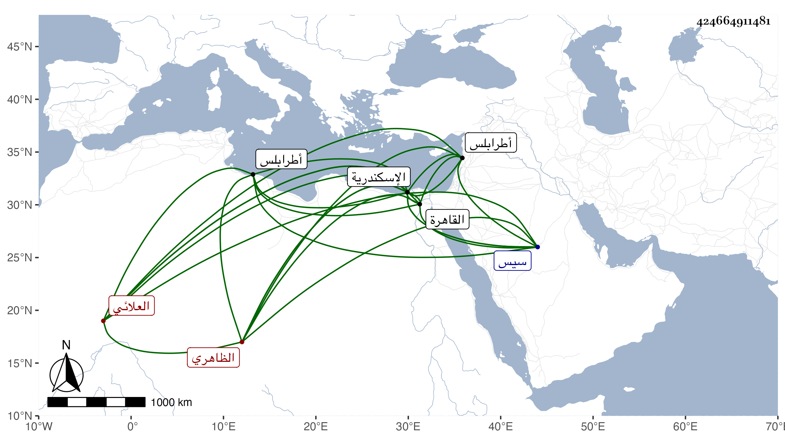

0902Sakhawi.DawLamic.ITO20230111-ara1.EIS1600.424664911481
Biography ID: 424664911481
291
جكم قرا بجيم وكاف كقمر العلائي الظاهري جقمق ويعرف بأميراخور الجمال . ترقى بعد أستاذه اليها ودام على ذلك مدة إلى أن تسلطن الظاهر بلباي فأمره عشرة ثم ولاه الاشرف قايتباي كشف الجسور والشرقية بعناية الدوادار الكبير فانه كان ممن تقرب منه جدا ولازم خدمته والركوب معه حتى عرف به وصيره بعد علي كثير من تعلقاته بل جعله نائبا عنه بالمؤيدية وغيرها حين خرج في التجريدة التي تلف فيها ، ثم ولي نيابة اسكندرية بعد اينال الاشرفي قايتباي حين انتقاله منها إلى طرابلس ، وتوجه اليها فلم تطب له وتوعك بها مدة فراسل وحضر بعد الاستئذان إلى القاهرة ليتداوى فلم يلبث أن مات في المحرم سنة سبع وثمانين ودفن بتربته التي بناها عند باب مقام الشافعي . وكان ذا همة عالية ورغبة في لقاء العلماء والصالحين ممن يتردد إليه الفخر الديمي حتى كان يقرأ هو وغيره عنده ، وكذا كان غيره من علماء الحنفية يتردد إليه للأخذ عنه وكثيرا ما كان يحضر دروس التقي الحصني لمجاورته له ، ويجمع الكتب العلمية ويقتنيها ويظهر التفقه والتدين ولما مات التقي دفنه بتربته وساعد ولده ، وزارني غير مرة وأظهر همة في التكلم مع تمراز وغيره في الصرغتمشية ، وبالجملة فهو من محاسن أتراك وقته رحمه الله وايانا واستقر بعده في نيابة اسكندرية بعد أشهر عليباي المحمدي الأشرفي قايتباي نقلا له من نيابة سيس . )
